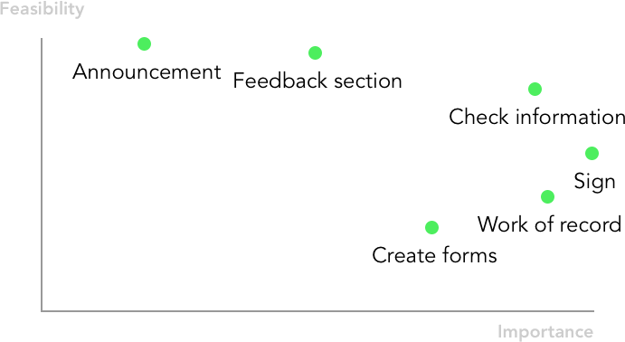
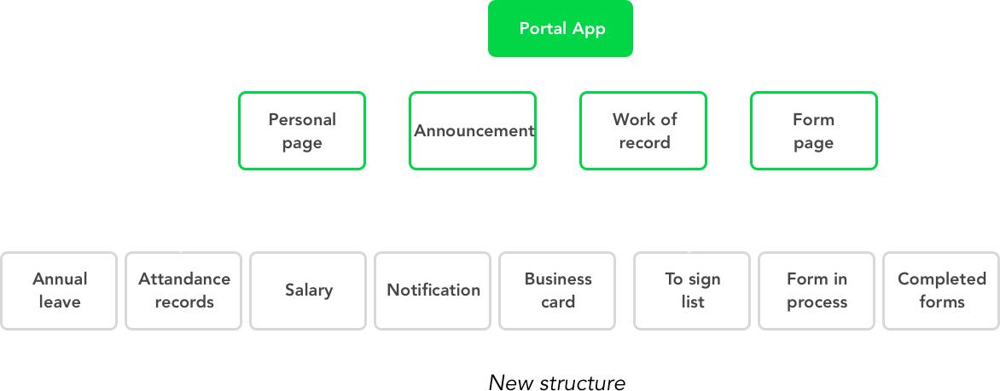
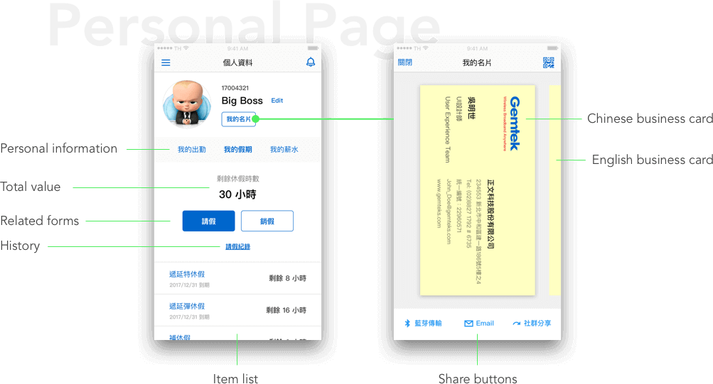
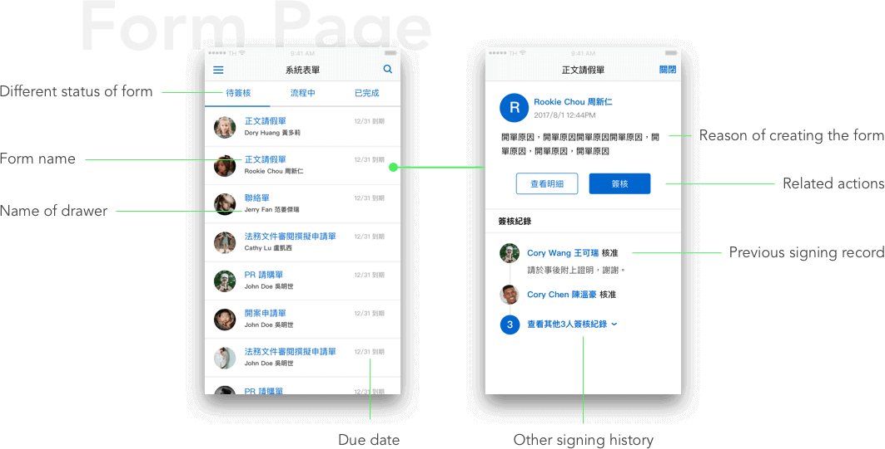
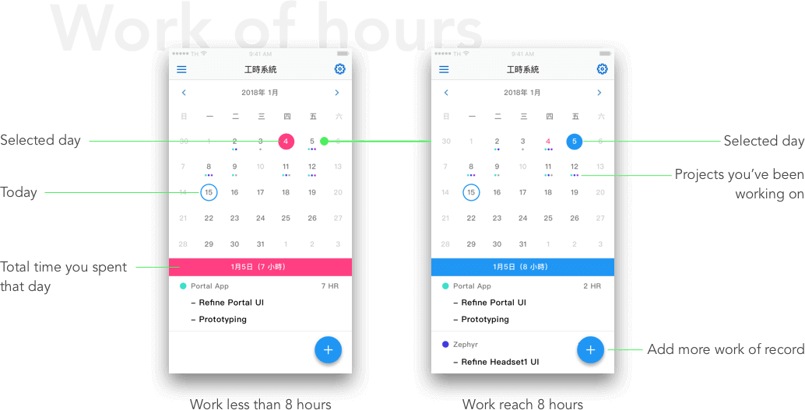

Project Goal
The goal of this project is make a App for employees at Gemtek to check info and fill up frequently used forms with mobile outside the company. The picture below is the structure of the system the employees use daily.
Contextual Inquiry
I interviewed around 20 of my colleagues by their desk to see how they use our ERP system to find out their needs and pain points. I divided users into three categories depends on how and where they use the system.
After the interviews, we arranged users' feedbacks and value the importance and feasibility of their needs.
Reconstruct
With the feedback we got earlier, we highlight 3 core function — sign forms, check information, and create frequently used forms like absence form. Base on these function, I reconstruct the structure as the picture below.
Prototype & Test
After finish the prototype, I went back to the users I interviewed to run user testing. Then refine the UI and flow with the feedback I got.
Final Design
In the personal page you can find all of your personal information and related forms. Also, the business card is right beside your profile picture which you can share easily with other people.
In the form page, there's 3 sections depends on the phase of the form. After you click the form you are going to sign, you can see the brief of the form on the top, and the signing history no the bottom.
When it comes to work of hours page, the most important information is which date you haven't record your work of hours up to 8 hours. Therefore, I use color to differentiate different status.
